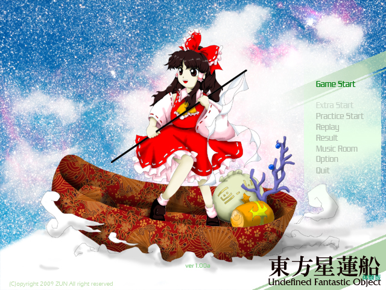

土はぬかるみ、氷で覆われた大地から有象無象が目覚める。 幻想郷を覆った僅かな雪は、この冬目覚めた地霊達を封じ込め、 さらに妖精達の動きを鈍らせるのに十分だった。その穏やかな眠り の季節も終わりを告げようとしている。 博麗神社。人里離れた辺境の地に建つ神社である。 博麗神社の巫女、博麗霊夢は森に住む魔法使いから不思議な噂を 耳にした。 その噂とは、雲の切れ目に不思議な船が空を飛んでいるのが目撃 されている、と言うことだった。その船は何かを探すかのように雲 の間を回遊しているらしい。 一体、その船の正体は何なのか。目的は何なのか。 霊夢達の興味は尽きなかった。何となくお宝の匂いがしたので。 東方星蓮船 〜 Undefined Fantastic Object. |

| 東方Project 第十二弾!! とうほうせいれんせん 「東方星蓮船 〜 Undefined Fantastic Object.」は、いつものゆるいキャラ達が、 弾幕となると突然切れ者になるシューティングゲームとなっています。 ＊このゲームには過激な弾幕シーンが含まれております 小さなお子様や、弾幕アレルギーの方はアレしてください。 |
・マニュアル
| ・ダウンロード（体験版、アップデートパッチ） | |
| 今後の予定 | |
|---|---|
| ○体験版CD | 3/08「博麗神社 例大祭」にて配布 |
| ○体験版＆修正プログラムダウンロード | こちらのページで |
| ○製品版 | 2009夏コミにて発表予定、その後、各同人ショップでも委託販売が開始する予定です。 |
| 体験版と製品版の違い 体験版は３面までしか遊べません。 ＊また、ゲームの仕様、ノリ、諸々は、何の予告もなく大変更する事もあります | |
| 動作環境 | |
|---|---|
| 必須環境 | |
| ＯＳ | Windows 2000/XP なお、DirectX 9以上がインストールされていること |
| ＣＰＵ | Pentium 以降（もしくは互換）のCPU （推奨 1GHz以上） |
| メインメモリ | 空き実メモリ 128M以上必要 |
| ビデオカード | DirectX9.0以上の DirectGraphic 対応の高速なビデオカード(必須 VRAM32M以上) 今のところ正常に動くことが確認取れているビデオカード ・nVIDIA GeForce シリーズ ・ATI RADEON シリーズ 等 |
| その他 | パッドコントローラ 高い暢気さ 空を飛べる気がする思い込み（推奨） |